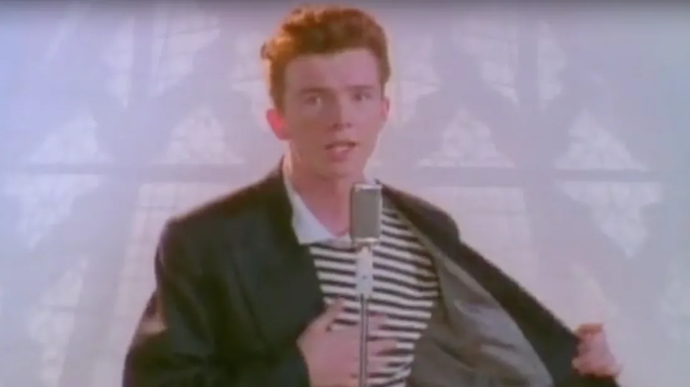

Rick Astley

He taught us to never give up.
Essential Facts
- 1966 - Born Richard Paul Astley in Lancashire, England
- 1987 - Recorded hit single "Never Gonna Give You Up"
- 2007 - "Rickrolling" internet phenomenon commences
- 2020 - "Rickrolling" persists, resulting in more than a half-billion views on
YouTube
'My professor sent us this link as the "final exam key"........'
-- YouTube
Commenter
'This is the internet’s theme song can we all agree'
-- YouTube Commenter
'it's been a while since i got rickrolled so i just rickrolled myself'
-- YouTube
Commenter